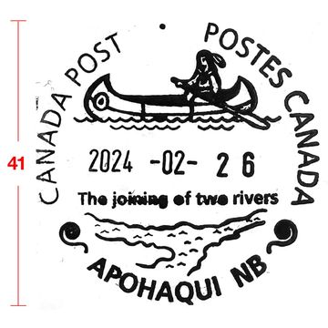
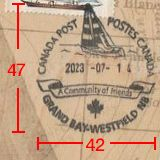
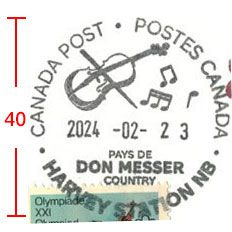
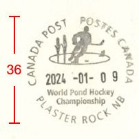

Pictorial cancels in New Brunswick
We have recorded 17 pictorial cancels in this province. 15 are still in use and can be requested from the post office, in person or by mail.
In use (15)

Apohaqui STN MainThe joining of two riversActive · ?–present Bath STN MainBathtubActive · ?–present
Bath STN MainBathtubActive · ?–present Beresford Main POSatyre fauve des MaritimesActive · ?–present
Beresford Main POSatyre fauve des MaritimesActive · ?–present
Grand Bay-Westfield STN MainA Community of FriendsActive · ?–present Grand Falls Grand-Sault POFalls and Gorge / Chute et GorgeActive · ?–present
Grand Falls Grand-Sault POFalls and Gorge / Chute et GorgeActive · ?–present Hartland STN MainThe World's Longest Covered Bridge / Le plus long pont couvert du mondeActive · 2023–present
Hartland STN MainThe World's Longest Covered Bridge / Le plus long pont couvert du mondeActive · 2023–present
Harvey Station POPAYS DE DON MESSER COUNTRYActive · 2023–present Juniper POTrain, fish, treesActive · ?–present
Juniper POTrain, fish, treesActive · ?–present New Denmark POOldest Danish Settlement in CanadaActive · ?–present
New Denmark POOldest Danish Settlement in CanadaActive · ?–present Norton POCovered Bridge CountryActive · ?–present
Norton POCovered Bridge CountryActive · ?–present
Plaster Rock POWorld Pond Hockey ChampionshipActive · ?–present Saint-François-de-Madawaska POLa Capitale du poulet / The Chicken CapitalActive · 2025–2036
Saint-François-de-Madawaska POLa Capitale du poulet / The Chicken CapitalActive · 2025–2036 Shediac Main POLe Capitale Mondiale du Homard / The Lobster Capital of the WorldActive · 2016–2027
Shediac Main POLe Capitale Mondiale du Homard / The Lobster Capital of the WorldActive · 2016–2027 St Martins STN MainShip in the oceanActive · ?–present
St Martins STN MainShip in the oceanActive · ?–present Upper Kent POOgging (lumbering), trees, river and fishesActive · 2022–?
Upper Kent POOgging (lumbering), trees, river and fishesActive · 2022–?
Retired (2)
Other provinces and territories: Alberta · British Columbia · Manitoba · Newfoundland and Labrador · Nova Scotia · Ontario · Prince Edward Island · Quebec · Saskatchewan · Northwest Territories · Nunavut · Yukon